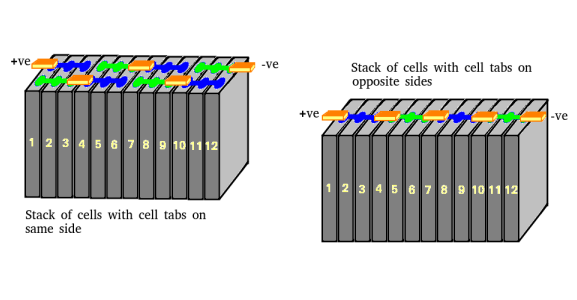
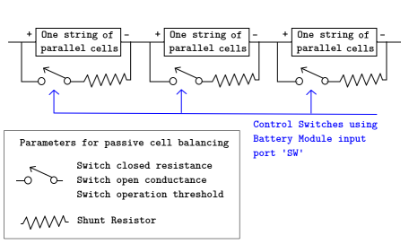
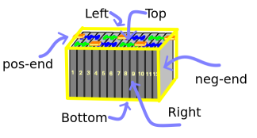

Battery Module Parameters and Documentation
This document details various options available for use in the Battery Module Simscape™ custom component.
Contents
Battery Module Overview
A Battery Module is defined as a collection of a number of cells in series and / or parallel. A Battery (Table-based) block from the Simscape Electrical library models the battery cell. You can specify the cell-to-cell variations by modifying the relevant parameters inside the custom component. Each module has six sides and you can choose from four different thermal options for each side.
Model Fidelity
- Select Model Fidelity — Modeling compexity of the Battery Module component, specified as Detailed, Grouped, or Lumped. Detailed model tracks each and every cell in the system. Lumped model tracks the whole module as a single unit or as lumped. Grouped model tracks the best and the worst cell in the module. The best and the worst cell is determined based on the cell-to-cell variation specified in Effective rate of coolant heat transfer from each cell, Cell terminal resistance R0 variation from baseline, Cell Ahr rating variation, Cell Self- discharge resistance variation from baseline Rleak, or External heat. For more information on the model fidelity, see table in the Appendix-A section. Grouped model working principle is shown in the image below. For more information on the Grouped model fidelity, see Appendix-B.

Battery Cell Electrical Parameters
For the Battery Cell (Table-based) block in the Simscape Electrical library, you can specify these parameters:
- Vector of temperatures, T — Temperatures at which the cell or module data for temperature-varying properties are tabulated, specified as a vector.
- Single cell Ahr rating, baseline — Cell capacity at the temperatures defined in the Vector of temperatures, T parameter, specified as a vector.
- Vector of state of charge values, SOC — Range of values between 0 and 1 at which the cell electrical parameters are defined, specified as a vector.
- No load voltage, V0 — Cell open-circuit potential values at different Vector of state of charge values, SOC and Vector of temperatures, T points, specified as a matrix.
- Current directionality — Current directionality, specified as Enabled or Disabled. This parameter defines hystersis during charge and discharge cycles.
- Terminal resistance, R0 — Cell ohmic resistance values at different Vector of state of charge values, SOC and Vector of temperatures, T points, specified as a matrix.
- Self-discharge — Cell self discharge option, specified as Disabled or Enabled. If you set this parameter to Enabled, you must then specify the value of the Self-discharge resistance, Rleak(T) parameter. The parameter, specified as resistance, defines a resistance for cell leakage at all points defined in the Vector of temperatures, T parameter.
- Charge dynamics — Options to select cell dynamics, specified as no dynamics, one time-constant dynamics, two time-constant dynamics, three time-constant dynamics, four time-constant dynamics or five time-constant dynamics.
- Polarization resistance — Polarization resistance values at different Vector of state of charge values, SOC and Vector of temperatures, T points, specified as a matrix. You must specify the value of Polarization resistance parameter based on the value of Charge dynamics parameter.
- Time constant — Time constant at different Vector of state of charge values, SOC and Vector of temperatures, T points, specified as a matrix. You must specify the value of Time constant parameter based on the value of Charge dynamics parameter.
Battery Cell Capacity Fade Parameters
If you set the Fade characteristics parameter of the Battery (Table- based) block to Equations, specify the parameters Number of discharge cycles, N, Change in no-load voltage after N discharge cycles (%), Change in terminal resistance after N discharge cycles (%), Change in ampere-hour rating after N discharge cycles (%) and the Change in polarization resistance after N discharge cycles (%).
Battery Cell Thermal Parameters
- Cell thermal mass — Thermal mass of a single cell, specified as a scalar.
- Cell thermal conductivity — Cell through-plane conductivity for pouch and can cells, or the radial conductivity for cylindrical cells, specified as a scalar.
Battery Module Electrical Parameters
- Number of series connected cells Ns — Number of strings in series, specified as an integer.
- Number of parallel connected cells Np — Number of parallel-cells in a string, specified as an integer.
- Choose cell type — Type of cell, specified as either Pouch, Can, Compact cylindrical, or Regular cylindrical.


- Cell height — Cell height, specified as a scalar.
- Cell width — Cell width for Pouch and Can cells, specified as a scalar.
- Cell thickness — Cell thickness for Pouch or Can cells, specified as a scalar.
- Cell diameter — Cell diameter for Compact cylindrical or Regular cylindrical, specified as a scalar.
- Number of cylindrical cells in a straight line — Number of cylindrical cells arranged in a straight line for packaging, specified as an integer.
- Accessory total resistance — Resistance that combines all inline resistance in a module, specified as a scalar. This resistance is the sum of cell tab, busbar, cable and/or weld resistances, specified as a scalar.
- Cell balancing — Cell balancing method, specified as either none or passive. In this example, this parameter is set to passive. Upon selection of passive cell balancing, four parameters become visible. These parameters are: Shunt resistor, Switch closed resistance, Switch open conductance and Switch operation threshold. Passive cell balancing is shown schematically in the figure below:

Battery Module Thermal Parameters
- Select module thermal management — Whether to activate thermal management in the module, specified as either None or Active. If you select Select module thermal management to Active, the option to specify heat transfer on the six sides of the module is visible. If you select Select module thermal management to None is selected, then Heat transfer coefficient to ambient is visible. All sides of the module lose heat at a rate defined by this heat transfer coefficient value.
The figure shows the labels of the six sides of the module. Each side of the module has four options for heat transfer — Detailed thermal output, Lumped thermal port, Thermal lookup table, or Convection boundary.

- Detailed thermal output enables thermal node of each cell to be connected to other thermal components and is provided through a output node. This is useful when detailed thermal analysis and information for every cell is required. Each cell then loses heat at a different rate. You can connect a detailed fluids component to the output port of the battery to help in design optimization studies (example : cell-to-cell cooling variation).
- Lumped thermal port, connects every cell to the same thermal node externally.
- Convection Boundary specifies a convection boundary condition on the module face, with its own heat transfer coefficient.
- Thermal lookup table method specifies the heat transfer from battery cells to the coolant using a lookup table method. The lookup table, for thermal resistance (W/K) values at multiple temperature and flowrate points, is defined for all the cells in the module. The range of temperature and flowrate for coolant are defined in Vector of temperatures for LUT thermal model, Tc and Vector of coolant flow rates, L, respectively. The Effective rate of coolant heat transfer from each cell is a 3-D matrix of size [T,F,C] where, T is the size of Vector of temperatures for LUT thermal model, Tc, F is the size of Vector of coolant flow rates, L and C is equal to the number of cells in the module, Ns X Np. The values of the matrix are calculated using Detailed thermal output or 3-D methods such as computational fluid dynamics. The values of the matrix depend on the actual hardware design of the cooling system or cold plates in the module. The 3D matrix is described schematically in the figure below:

The 3D matrix defines thermal resistance values at multiple temperature and flowrate points. During the simulation, the actual value is picked based on FlwR and FlwT. FlwR and FlwT specify coolant flowrate and inlet temperature based on the values set.
FlwR — Value between 0 and 1, specified as a scalar. The FlwR input value is used to dynamically choose the right value of the flow rate during the simulations. The value of the FlwR input defines the actual flow rate in the module. In the Vector of coolant flow rates, L parameter, FlwR equal to 0 means no flow, while FlwR equal to 1 means highest flow rate value.
FlwT — Positive or negative value that, when summed to the ambient temperature, equals the coolant inlet temperature. A value of +15 for the FlwT input and 273.15 K at the Amb port makes the coolant inlet temperature equal to 273.15 + 15 = 288.15K. A value of -15 for the FlwT input and 273.15 K at the Amb makes the coolant inlet temperature equal to 273.15 - 15 = 258.15 K.

To open the above example, run the command on MATLAB command prompt: uiopen('Overview/batteryModuleDoc_example.slx',1)
- External heat — External heat input to each cell in a module due to a hot component placed near the module, specified as a vector.
Battery Module Cell-to-Cell Variation Parameters
- Vector of initial cell temperature — Cell initial temperature, specified as a vector.
- Vector of initial cell state of charge — Cell initial state of charge, specified as a vector.
- Cell Ahr rating variation — Cell-to-cell variations in cell capacity at all Vector of temperatures, T points for each cell, specified as a vector of scalar values. If you set this array to 1, all cell capacity is the same. The array values for a cell are multiplied with the value specified in the Single cell Ahr rating, baseline parameter to calculate the actual capacity or the Ahr rating of the cell.
- Cell terminal resistance R0 variation from baseline — Cell-to-cell variations in cell terminal resistance, specified as a vector of scalar values. If you set this array to 1, all cell terminal resistance values are the same. The array values for a cell are multiplied with the value specified in the Terminal resistance, R0 parameter to calculate the actual terminal resistance value for the cell.
- Cell Self-discharge resistance variation from baseline Rleak — Cell- to-cell self-discharge, specified as a vector of scalar values. This parameter is visible if Self-discharge is Enabled. If you set this array to 1, all cell self discharge values are the same. The array values for a cell are multiplied with the value specified in the Self-discharge resistance, Rleak(T) parameter to calculate the self-discharge resistance value for the cell.
Appendix-A

Appendix-B
The best and the worst cell is automatically selected based on the user input for:
- Effective rate of coolant heat transfer from each cell (if the Thermal lookup table is selected on a module side for the battery thermal management),
- Cell terminal resistance R0 variation from baseline,
- Cell Ahr rating variation,
- Cell Self-discharge resistance variation from baseline Rleak and
- External heat
If the module thermal management does not use the option Thermal lookup table, the best and the worst cells cannot be selected based on the same. The cooling effect variation and best/worst cell cannot be found out or determined if Detailed thermal output or the Lumped thermal port is used for module thermal management. In that case, the best and worst cells are decided based on:
- Cell terminal resistance R0 variation from baseline,
- Cell Ahr rating variation,
- Cell Self-discharge resistance variation from baseline Rleak and
- External heat
The code checks for cell-to-cell variation in the data for these parameters and skips the ones that have no variation present. If multiple parameters are defined with cell-to-cell variations, the best ad the worst cells are decided based on cell indices as per the parameter preference list above. These details are present in file getGroupedModelIndexFinal.m.
In scenarios where multiple parameters are defined with cell-to-cell variations, it is important that the cell indices for the best and worst cells are same for all parameters, else the variation effect would be smoothed out in averaging and group-creation (Grouped model fidelity) for large modules. You will be able to simulate with warning messages if the cell indices for the best and worst cells differ for different parameters.